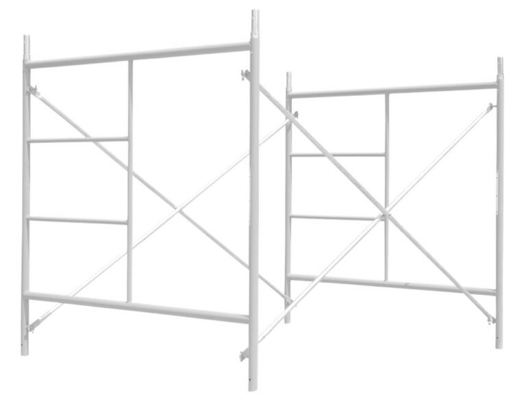

Son una armazón metálica que se compone de tubos de hierro de diferentes diámetros que servirán para hacer un marco con diferentes medidas de ancho y altura, estos son la base de la estructura y sobre la que irán asentados todos los accesorios, se necesitarán dos marcos por módulo.
Se contemplan las siguientes opciones para el andamio de acceso:
Opción 1 – Andamio de acceso ensamblado con breizas de 2.50 mts. da una extensión de 2.13 mts.
Opción 2 – Andamio de acceso ensamblado con breizas de 2.00 mts. da una extensión de 1.52 mts.
